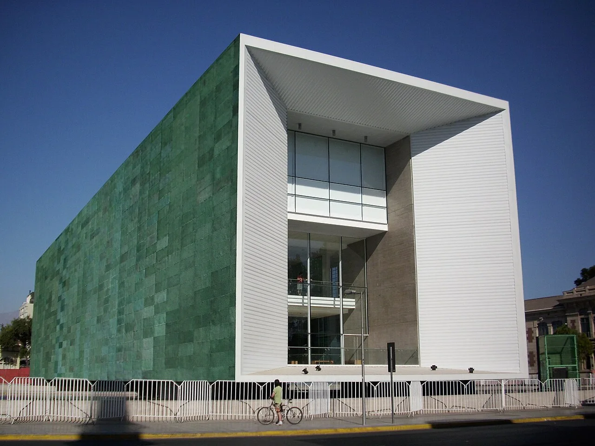
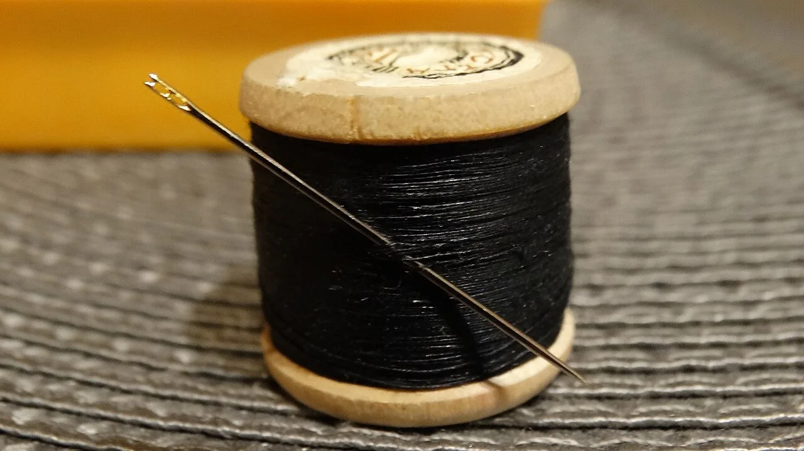

Un retazo puede representar una casa, pero antes necesita ser recortado, colocado y fijado a un soporte. La narración de una arpillera se construye mediante esas operaciones. Mirarla solo como una imagen entrañable de trabajo manual impide reconocer su composición: qué ocupa el primer plano, cómo se distinguen las figuras y qué relación se establece entre una escena y su fondo.
La documentación de Memoria Chilena vincula la producción de arpilleras durante la dictadura con el Comité de Cooperación para la Paz y, después, con la Vicaría de la Solidaridad. Describe una práctica que permitió generar ingresos y denunciar violaciones de derechos humanos. Ambas funciones importan. Reducir las piezas a testimonio político puede dejar fuera el trabajo necesario para sostener una vida; reducirlas a mercancía artesanal borra aquello que hicieron visible. [1]
El cuaderno del Servicio Nacional del Patrimonio Cultural sobre arpilleristas de la Región Metropolitana explica materiales y operaciones: soportes textiles, retazos, figuras y terminaciones. Esa descripción permite tomar en serio la técnica, sin suponer que la fuerza del relato hace irrelevante su realización. Lo que una pieza puede contar depende también de cómo se unen y se mantienen sus partes. [2]


En una superficie de tela, el espesor cambia la imagen. Una figura superpuesta produce relieve; un borde sin continuidad suficiente puede separarse del fondo. La costura hace visible una forma de unión que la impresión suele ocultar. No conviene extraer de aquí una regla común a todas las arpilleras: cada obra necesita mirarse en su composición concreta y con la información de su autora.
La primera fotografía de este artículo muestra el exterior del Museo de la Memoria y los Derechos Humanos, no una escena del período narrado. La segunda presenta hilo y aguja, sin atribuirlos a un taller chileno. Son imágenes de contexto. Preferimos mantener esa distancia a reproducir una pieza protegida sin permiso o a usar una fotografía genérica como falsa documentación de quienes cosieron.
El museo conserva y publica una colección de arpilleras. La posibilidad de estudiarlas depende de registrar procedencia, fechas y autorías cuando se conocen. Decir que son trabajo de mujeres no debería reemplazar los nombres disponibles por una categoría indiferenciada. Tampoco autoriza a completar con biografías imaginadas lo que el registro no conserva. La precisión documental forma parte del respeto por la obra. [3]
El testimonio introduce otra cautela. Una arpillera puede representar una experiencia y tomar posición frente a ella; no es por eso una transcripción completa de lo ocurrido. Analizarla exige distinguir la construcción de la escena de la verificación histórica del acontecimiento. Ambas lecturas pueden enriquecerse, siempre que una no reclame sustituir a la otra.


La circulación también modifica la recepción. Al salir del taller, una pieza puede encontrarse con compradores o visitantes que no conocen su contexto. Un pie de imagen tiene entonces una responsabilidad concreta: explicar qué se sabe, identificar la fuente y no suavizar la violencia mediante una admiración exclusiva por el color. La belleza material no obliga a volver confortable el contenido.
Tampoco corresponde presentar la costura como terapia demostrada para todas sus participantes. Reunirse, trabajar y narrar pueden tener significados diversos; atribuir efectos clínicos requeriría otra investigación. El interés de estas prácticas no depende de esa promesa. Basta reconocer que produjeron objetos, conocimientos e intervenciones públicas que merecen una lectura atenta a sus condiciones de realización.
Para un proyecto de diseño contemporáneo, la pregunta no debería ser cómo tomar la apariencia de una arpillera y convertirla en identidad gráfica. Primero habría que preguntar si existe una colaboración, qué se acuerda, quién decide y cómo se reconoce el trabajo. Una tradición documentada no es un repertorio de recursos disponibles sin interlocución.
Estas piezas amplían lo que entendemos por imagen pública: una superficie blanda y domésticamente reconocible puede contener un relato que incomoda. Su potencia no reside en oponer sensibilidad a rigor. Está en reunir una decisión material, una construcción visual y una necesidad de decir algo. Conservar las tres permite leer la costura como trabajo de pensamiento, sin convertir a sus autoras en figuras anónimas de una memoria ejemplar.
Fuentes.
- Biblioteca Nacional de Chile / Memoria Chilena — Arpilleras
- Servicio Nacional del Patrimonio Cultural — cuaderno para participantes: arpilleristas de la Región Metropolitana
- Museo de la Memoria y los Derechos Humanos — publicación Arpilleras
Ensayo documental, sin entrevistas ni evaluación terapéutica. Las fotografías son de contexto: exterior del museo y útiles de costura; no reproducen arpilleras de las colecciones.
Fuentes consultadas el 15.11.2026. Análisis e interpretación: RUMMOR. Edición privada para revisión.